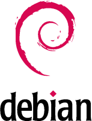

m23 est basé complètement sur Debian GNU/Linux www.debian.org, une distribution Linux libre. Le serveur comme les clients m23 sont des systèmes Debian GNU/Linux. Pendant le développement de m23, nous avons fait attention à la transparence de tous processus et surtout à liberté de licences des clients et serveurs! Actuellement, Debian offre environ 25.000 paquets de logiciel, qui peuvent être téléchargés de l'internet et installés sur n'importe quel nombre de clients.
root
2015-09-06